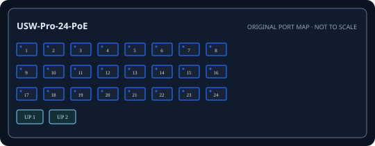

[ EXACT MODEL / SKU ]
Ubiquiti UniFi Switch Pro 24 PoE (USW-Pro-24-PoE)
Exact physical interfaces and their nominal link rates are documented below. Link rates are not measured application throughput.

IDENTIFICATION: Confirm model/SKU, hardware revision, power supply and firmware on the physical unit. No measured throughput is asserted.
Model-specific specifications and compatibility
| Exact model / SKU | UniFi Switch Pro 24 PoE (USW-Pro-24-PoE); manufacturer SKU USW-Pro-24-PoE. |
|---|---|
| Hardware revision | Exact Ubiquiti model USW-Pro-24-PoE; revision is label-specific and not encoded in model string. Verify chassis revision and firmware. |
| Port count and rates | 24 x 10/100/1000BASE-T RJ-45 switch ports. Rates are per interface; aggregate full-duplex capacity is not a single-port throughput figure. |
| PoE standard and budget | Ports 1-16 IEEE 802.3at PoE+ (up to 30 W/port); ports 17-24 IEEE 802.3bt PoE++ (up to 60 W/port); 400 W aggregate budget. |
| Uplinks | Two 10GbE SFP+ uplinks. |
| Management and VLAN | Managed through UniFi Network; 802.1Q VLANs, LACP, STP, ACL/QoS and port profiles depend on UniFi software version. |
| Power input | Internal AC input 100-240 V, 50/60 Hz; 400 W aggregate PoE budget, not a per-port allocation. |
| Power and compatibility | 1U rack mount; use a supported UniFi Network version and match IEEE PoE class; qualify SFP+ optics/DACs. |
| Measured performance | No independently measured packet-forwarding rate or latency is claimed. Test with documented firmware, packet sizes, port pairs, VLAN/QoS configuration and traffic direction if required. |
Installation and identification notes
- Record SKU, revision, PSU label, serial, firmware and port mapping before commissioning; similar model suffixes may use different power and firmware.
- Match copper cable category/length and SFP rate, wavelength, fiber type and reach to both ends of every link.
- For PoE models, confirm endpoint IEEE class negotiation and calculate demand against both per-port limits and aggregate budget.
- Preserve configuration backups and vendor documentation without publishing credentials or private network data.
Manufacturer datasheets and manuals
- Ubiquiti official USW-Pro-24-PoE technical specificationsOfficial Ubiquiti model/series support or specification source; confirm revision against the unit label.
- Ubiquiti official USW-Pro-24-PoE datasheetOfficial Ubiquiti model/series support or specification source; confirm revision against the unit label.
- Ubiquiti official quick-start guideOfficial Ubiquiti model/series support or specification source; confirm revision against the unit label.
Use the exact label revision to choose current firmware, installation manuals and platform compatibility notes.